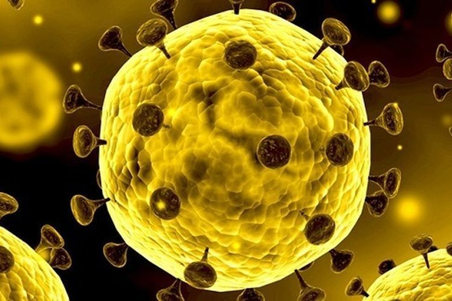

Apa itu Corona

Menurut situs WHO,
virus corona adalah keluarga besar virus yang dapat menyebabkan
penyakit pada hewan atau manusia.
Pada manusia corona diketahui menyebabkan infeksi
pernafasan mulai dari flu biasa hingga penyakit yang lebih parah seperti Middle East
Respiratory Syndrome (MERS), dan Severe Acute Respiratory Syndrome (SARS).
Virus corona paling terbaru yang ditemukan adalah virus corona COVID-19. Virus ini termasuk
penyakit menular dan baru ditemukan di Wuhan, China pada Desember 2019 yang kemudian menjadi
wabah.
Gejala COVID-19 yang paling umum adalah
- demam
- kelelahan
- batuk kering
- sakit dan nyeri
- hidung tersumbat
- pilek
- sakit tenggorokan
- diare
Gejala-gejala ini bersifat ringan dan terjadi secara bertahap.
Namun, beberapa orang yang terinfeksi tetapi tidak menunjukkan gejala apa pun dan tak merasa tidak
enak badan. Kebanyakan orang (sekitar 80%) pulih dari penyakit tanpa perlu perawatan khusus. Sekitar 1
dari setiap 6 orang yang mendapatkan COVID-19 sakit parah dan mengalami kesulitan bernapas.
Orang yang lebih tua, dan mereka yang memiliki masalah medis seperti tekanan darah tinggi, masalah
jantung atau diabetes, lebih mungkin terkena penyakit serius. Orang dengan demam, batuk dan kesulitan
bernapas harus mendapat perhatian medis.
Menurut WHO, virus corona COVID-19 menyebar orang ke orang melalui tetesan kecil dari hidung atau mulut
yang menyebar ketika seseorang batuk atau menghembuskan nafas. Tetesan ini kemudian jatuh ke benda yang
disentuh oleh orang lain.
Orang tersebut kemudian menyentuh mata, hidung, atau mulut. Berdasarkan studi yang ada saat ini belum
ditemukan penyebaran COVID-19 melalui udara bebas.
Informasi saja, menurut Worldometers, angka kasus tepatnya yaitu ada sebanyak 1.270.849 dengan 69.380
kematian dan 261.316 orang sembuh. Dari total kasus, sebanyak 336.085 terdapat di Amerika Serikat (AS).
Asal Mula di Wuhan
Dokter Li Wenliang Sudah Beri Peringatan Awal
Sebelum virus corona ramai diketahui banyak orang, seorang dokter bernama Li Wenliang telah
memberikan informasi soal kemunculan virus tersebut. Dia memberikan pesan yang mengejutkan di
grup alumni sekolah kedokterannya melalui aplikasi pesan singkat yang populer di China, WeChat.
"Tujuh pasien dari pasar makanan laut lokal telah didiagnosis menderita penyakit mirip SARS dan
dikarantina di rumah sakitnya," tulisnya.
Li menjelaskan, menurut sebuah tes yang telah dilihatnya, penyakit itu adalah virus corona,
yang ternyata satu keluarga dengan virus sindrom pernapasan akut (SARS).
"Saya hanya ingin mengingatkan teman-teman sekelas universitas saya agar berhati-hati," kata Li.
Li adalah seorang dokter berusia 34 tahun yang bekerja di Wuhan, kota yang menjadi pusat
penyebaran virus corona di China. Li mengatakan kepada teman-temannya untuk mengingatkan
orang-orang yang mereka cintai akan bahayanya virus ini.
Perkataan Li pun benar terjadi.
Polisi Justru Menuduh Dokter Li Wenliang Sebarkan Isu
Segera setelah dia mengunggah pesan itu, Li dituduh menyebarkan isu oleh polisi Wuhan. Dia adalah
salah satu dari beberapa petugas medis yang menjadi sasaran polisi karena berusaha untuk
mengungkap virus mematikan ini di pekan-pekan awal sebelum terjadinya wabah.
Pada waktu yang sama ketika Li mengirim pesan kepada teman-temannya, sebuah pemberitahuan darurat dikeluarkan
oleh Komisi Kesehatan Kota Wuhan, yang berisikan pemberitahuan kepada institusi medis kota jika ada beberapa
pasien dari Pasar Grosir Makanan Laut Huanan mengalami pneumonia yang tidak diketahui.
Menurut surat kabar pemerintah Beijing Youth Daily, dini hari tanggal 31 Desember, otoritas
kesehatan Wuhan mengadakan pertemuan darurat untuk membahas wabah tersebut. Setelah itu, Li dipanggil
oleh pejabat rumah sakitnya agar menjelaskan bagaimana dia bisa tahu tentang kasus-kasus itu.
Tanggal 3 Januari 2020, Li dipanggil ke kantor polisi setempat dan ditegur karena menyebarkan desas-desus yang
sangat mengganggu ketertiban sosial atas pesan yang dia kirimkan dalam grup obrolan.
Sejak awal, pihak berwenang China ingin mengendalikan informasi tentang wabah itu, membungkam suara apa pun yang berbeda
dengan narasinya, terlepas dari apakah mereka mengatakan yang sebenarnya.
Dokter Li Dipanggil Polisi dan Diminta Teken Pengakuan Kesalahan
Li menyebarkan informasi soal virus corona yang ia periksa. Kemudian pihak kepolisian mengetahui informasi tersebut melalui aplikasi WeChat.
Usai dipanggil pihak kepolisian China, Li harus menandatangani pernyataan untuk mengakui kesalahan dan berjanji untuk
tidak melakukan tindakan melanggar hukum lebih lanjut.
Dia takut akan ditahan. "Keluarga saya akan khawatir tentang saya, jika saya kehilangan
kebebasan saya selama beberapa hari," katanya kepada CNN melalui pesan teks di WeChat.
Li terdengar batuk terlalu banyak dan napasnya tidak teratur untuk berbicara melalui telepon.
Untungnya, Li diizinkan meninggalkan kantor polisi setelah satu jam berada di sana.
Li sempat mengklarifikasi pernyataannya dalam pesan berikutnya yang menyatakan bahwa virus itu
sebenarnya adalah tipe virus corona yang berbeda. Sangat disayangkan, tangkapan layar dari
pesan pertama Li sudah menyebar di dunia maya.
Isu Virus Corona dari Hewan
Badan kesehatan dunia (WHO) sebelumnya menyatakan bahwa kemungkinan, hewan menjadi sumber utama dari virus ini. Namun,
beberapa penularan secara terbatas antara manusia bisa terjadi dengan kontak dekat.
Dokter spesialis Erlina Burhan dari Pokja Infeksi Pengurus Pusat PDPI juga mengatakan, kasus pneumonia
berat ini dimulai dari sebuah pasar ikan yang juga menjual unggas di Wuhan, Tiongkok.
"Sampai saat ini belum ada bukti yang mengindikasikan penularan (virus) dari manusia ke
manusia," kata Erlina dalam konferensi pers di Kantor PDPI.
Keterlambatan Penanganan karena Pembatasan Informasi
Pada akhir Januari, keterlambatan penanganan wabah oleh pemerintah Wuhan mulai dipahami di China. Banyak netizen memikirkan
peringatan dini yang disebarkan dari delapan orang itu bisa menyelamatkan ratusan nyawa.
Pada saat kemarahan publik tengah meningkat, Mahkamah Agung China pada 28 Januari, mengkritik polisi Wuhan
karena menghukum para 'pembuat isu'.
"Itu mungkin merupakan hal yang beruntung, jika masyarakat mendengarkan 'desas-desus' karena
mengandung virus corona baru pada waktu itu, mungkin masyarakat akan mengambil langkah-langkah
seperti mengenakan masker, desinfeksi yang ketat dan menghindari pergi ke pasar satwa liar,"
kata Mahkamah Agung.
Menghadapi tekanan publik, polisi Wuhan mengeluarkan pernyataan pada hari berikutnya, yang mengatakan bahwa
delapan orang itu hanya melakukan kesalahan ringan terutama karena menyebarkan informasi yang tidak
terverifikasi. Polisi mengatakan bahwa mereka hanya dipanggil untuk berbicara dan tidak ditahan atau didenda.
Presiden China Beri Lampu Hijau Penyebaran Informasi
Pada 20 Januari akhirnya pemerintah pusat mengambil alih, Presiden Xi Jinping memerintahkan
upaya tegas untuk menghentikan penyebaran virus corona dan menekankan perlunya keterbukaan
informasi yang tepat waktu. Itu adalah pertama kalinya Xi berbicara secara terbuka dalam
menangani wabah corona.
Seruan Xi untuk merilis informasi yang tepat waktu dipandang sebagai lampu hijau untuk melaporkan virus corona.
Wartawan China juga mulai memproduksi liputan mendalam serta laporan investigasi. Surat kabar yang dikelola
pemerintah Beijing, Youth Daily, mewawancarai Li dan artikelnya pun menjadi viral setelah ditulis.
Meski dihapus dalam beberapa saat, tetapi keributannya tetap ada.